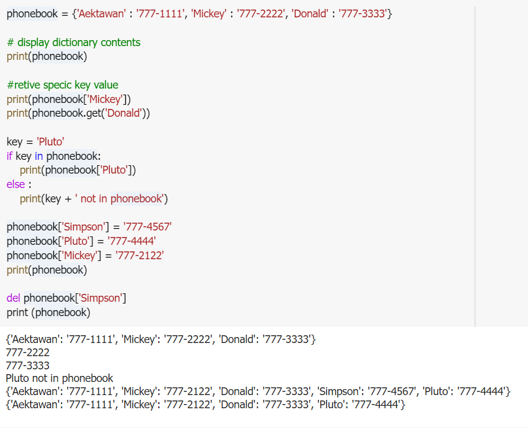

DICTIONARY AND SET

Dictionaries
Introduction
- Dictionary: object that stores a collection of data
- Each element consists of a key and a value
- To retrieve a specific value, use the key associated with it
- Format for creating a dictionary
- To retrieve a specific value, use the key associated with it
- Format for creating a dictionary
dictionary = {key1:val1, key2:val2}
Add And Delete Dictionary
- Dictionaries are mutable objects
- To add a new key-value pair: dictionary[key] = value
- If key exists in the dictionary, the value associated with it will be changed
- To delete a key-value pair: del dictionary[key]
- If key is not in the dictionary, KeyError exception is raised
Example dictionary
Dictionary Number Of Elements And Mixing Data Types
- len function: used to obtain number of elements in a dictionary
- Keys must be immutable objects,but associated values can be any type of object
- One dictionary can include keys of several different immutable types
- Values storedin a single dictionarycan be of different types
Creating An Empty Dictionary And Using For Loop
- To create an empty dictionary:
- Use {}
- Use built-in function dict()
- Elements can be added to the dictionary as program executes
- Use a for loop to iterate over a dictionary
- General format: for key in dictionary:
for key in dictionary :
Example For Loop Dictionary
Some Dictionary Methods
Dictmethods
set
Set Methods and Useful Built-in Functions
- Set: object that stores a collection of data in same way as mathematical set
- All items must be unique
- Set is unordered
- Elements can be of different data types
- len function : returns the number of elements in the set
- Sets are mutable objects
- addmethod: adds an element to a set
- updatemethod: adds a group of elements to a set
- Argument must be a sequence containing iterable elements, and each of the elements is added to the set
- remove and discard methods: remove the specified item from the set
- The item that should be removed is passed to both methods as an argument
- Behave differently when the specified item is not found in the set
- removemethod raises aKeyErrorexception
- discardmethod does not raise an exception
- clear method: clears all the elements of the set
Finding The Union Of Sets
- Union of two sets: a set that contains all the elements of both sets
- To find the union of two sets:
- Use the union method
- Format:set1.union(set2)
- Use the | operator
- Format:set1 | set2
- Both techniques return a new set which contains the union of both sets
Finding The Intersection Of Sets
- Intersection of two sets: a set that contains only the elements found in both sets
- To find the intersection of two sets:
- Use theintersectionmethod
- Format:set1.intersection(set2)
- Use the & operator
- Format:set1 & set2
- Both techniques return a new set which contains the intersection of both sets
Finding The Symmetric Difference Of Sets
- Symmetric difference of two sets: a set that contains the elements that are not shared by the two sets
- To find the symmetric difference of two sets:
- Use the symmetric_difference method
- Format: set1.symmetric_difference(set2)
- Use the ^ operator
- Format: set1 ^ set2
Finding Subsets And Supersets
- Set A is subset of set B if all the elements in set A are included in set B
- To determine whether set A is subset of set B
- Use the issubset method
- Format: setA.issubset(setB)
- Use the <= operator
- Format: setA <= setB
- Set A is superset of set B if it contains all the elements of set B
- To determine whether set A is superset of set B
- Use the issuperset method
- Format: setA.issuperset(setB)
- Use the >= operator
- Format: setA >= setB
Example Setintro
Set Operation

Serializing Objects
- Serialize an object: convert the object to a stream of bytes that can easily be stored in a file
- Pickling: serializing an object
- To pickle an object:
- Pickling: serializing an object